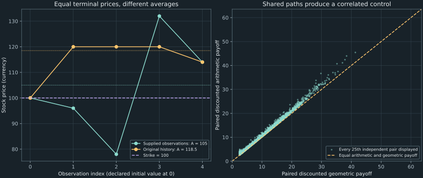
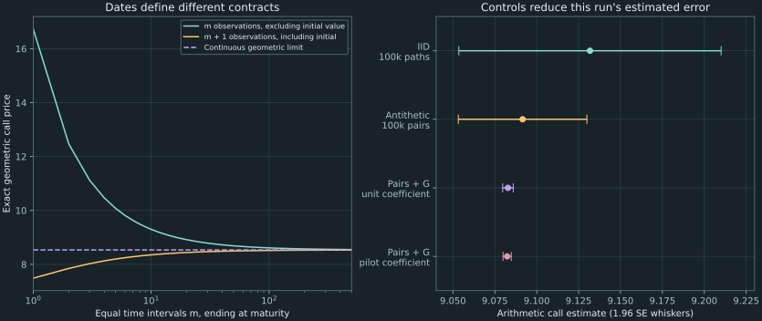

24. Asian options and a complete numerical workflow
A call on the average of 250 stock-price observations has an estimated price of 9.08234 and estimated standard error 0.00126 in the controlled experiment below. A call on the terminal stock alone has analytic price 16.73413 under the same stock model. The difference is primarily a difference between contracts. Changing which observations enter the average also changes the contract, even when a simulation describes the change as grid refinement.
The running stock starts at 100, the strike is 100, maturity is one year, the continuously compounded annual risk-free rate is 10%, and volatility is 30% per square-root year. These are synthetic teaching inputs continued from Chapter 23. We specify the observation dates, retain the path information needed by the payoff, derive an exact geometric-average benchmark, and use it to reduce the arithmetic-average estimator's variance. The final sections connect this computation to the course's methods for bonds, options, and portfolios.
Source spine: the course synthesis in recording 71, the Asian-option parts of the final R and Python laboratories, and the Asian material in mixed recordings 69 and 74. Exact benchmark derivations, streaming and control implementations, coupled-contract experiments, and the compensated finite-innovation example are teaching extensions. Original seeds identify the computations; their outputs are not reconstructions of unspecified source random streams.
24.1 Specify the observation contract and pricing law Recording 69, 17:25
A fixed-strike Asian call pays the positive part of an average underlying price minus a stated strike. Here exercise and payment occur only at maturity, rather than at a choice of earlier times. Let $S_t>0$ be the stock price at time $t$, let $K\geq0$ be the strike in the same currency units, and let $T>0$ be maturity in years. Specify $m$ equally weighted observation dates
\[ 0\leq t_1<t_2<\cdots<t_m=T,\qquad A_m=\frac1m\sum_{j=1}^m S_{t_j},\qquad G_m=\exp\!\left(\frac1m\sum_{j=1}^m\log S_{t_j}\right). \tag{24.1} \]The arithmetic average $A_m$ adds observed prices before dividing by their count. The geometric average $G_m$ averages their logarithms and then exponentiates. It is not the geometric mean of the logarithms themselves. The two fixed-strike calls have prices
\[ C_A=E_Q[Y],\quad Y=e^{-rT}(A_m-K)^+;\qquad C_G=E_Q[X],\quad X=e^{-rT}(G_m-K)^+, \tag{24.2} \]where $x^+=\max(x,0)$, $r$ is the constant continuously compounded annual risk-free rate, and $Q$ is the pricing probability law. The payoff, discount factor, and law must be specified together. An investor's predictive return distribution from Chapter 23 would answer a different expectation unless an additional pricing argument supplied it.
Assume a non-dividend-paying stock and the constant-parameter geometric Brownian model established in Chapters 16 and 22. Its risk-neutral log price is
\[ \log S_t=\log S_0+(r-\tfrac12\sigma^2)t+\sigma W_t, \tag{24.3} \]where $\sigma>0$ is volatility per square-root year and $W_t$ is standard Brownian motion under $Q$. Thus $W_0=0$, increments over disjoint intervals are independent normals, and an increment over length $\Delta t$ has variance $\Delta t$. The usual frictionless pricing assumptions remain in force. Statistical accuracy under this model does not establish its empirical adequacy.
The default contract uses $m=250$ dates $t_j=jT/m$, excluding the initial price $S_0$. Including time zero would add a known observation and change the denominator to 251. A calendar-based contract would also need its actual date and weighting rules; equally spaced model times are the explicit convention here. The program treats these dates as contract inputs. The number $N$ of independent simulated paths controls an estimator's sampling precision; it does not change the payoff definition.
Trading venue is a separate contract consideration. Over-the-counter trading occurs outside an exchange; the averaging formula alone does not require that venue. As a dated exchange-contract design example, Cboe's February 29, 2016 circular, pages 1–3, specifies Asian-style FLEX index settlement using twelve monthly observations. Such a specification also defines calendars, settlement, and exercise conventions. The idealized price calculation here uses its own explicit model dates and omits credit, collateral, and trading frictions.
For this contract, the geometric call can be priced analytically. The arithmetic call will use that exact price as a control. Its reported estimate remains a random numerical result, not an exact value inferred from printing many decimals. Keeping those two evidence types distinct allows a checkable computation even when the main target lacks the geometric contract's normal-distribution reduction.
24.2 Identify what the payoff must remember Recording 74, 9:20
The workshop supplies four observed prices $96,78,132,114$ and strike 100. Their arithmetic average is $A_4=105$, while their geometric average is $G_4\approx103.029396176692$. The arithmetic call therefore pays 5 at maturity; the geometric call pays approximately 3.029396176692. These are undiscounted payoffs on one supplied history, not estimates of their expected prices.
The ordering follows without a stock-price model. The logarithm is strictly concave on positive numbers because its second derivative is $-1/x^2$. Finite Jensen's inequality, proved in §14.2, gives
\[ \frac1m\sum_{j=1}^m\log S_{t_j} \leq\log\!\left(\frac1m\sum_{j=1}^m S_{t_j}\right). \]Exponentiation preserves this inequality, so $G_m\leq A_m$. Equality holds when all equally weighted observations coincide, including the single-observation case. Since the call's positive-part function is nondecreasing,
\[ (G_m-K)^+\leq(A_m-K)^+. \tag{24.4} \]For identical dates, weights, strike, payment time, and positive discount factor, this is a pathwise inequality: it holds separately on every positive-price history. Taking expectations under the same law gives $C_G\leq C_A$ when the prices are finite. The model in (24.3) has finite first moments at every date, and $Y\leq e^{-rT}A_m$, so these expectations are finite.
A terminal price alone does not determine the average
Compare the supplied history with the original teaching history $120,120,120,114$. Both end at 114, but the second has arithmetic average 118.5 and arithmetic call payoff 18.5. A terminal European call with strike 100 pays 14 on either history. The first Asian payoff is below 14 and the second is above it. Thus the terminal stock price cannot determine the Asian payoff, and the arithmetic Asian payoff is not always below the terminal European payoff on each path.
| Four observed prices | Arithmetic average | Arithmetic call payoff | Terminal call payoff |
|---|---|---|---|
| 96, 78, 132, 114 | 105 | 5 | 14 |
| 120, 120, 120, 114 | 118.5 | 18.5 | 14 |
The corresponding geometric average of the second history is approximately 118.471025388172. It remains below its arithmetic average, consistent with (24.4). A comparison of expected Asian and European prices needs assumptions about the joint stock law; a pointwise claim about their payoffs would already fail in this table.
The following complete miniature checks the supplied history. Its only input is the four-price list and the declared strike; it neither simulates a probability law nor writes files.
import math
prices = [96.0, 78.0, 132.0, 114.0]
strike = 100.0
arithmetic = math.fsum(prices) / len(prices)
geometric = math.exp(math.fsum(math.log(s) for s in prices) / len(prices))
assert arithmetic >= geometric
print(f"A={arithmetic:.12f}, G={geometric:.12f}")
print(f"Asian={max(arithmetic - strike, 0):.12f}")
print(f"Terminal={max(prices[-1] - strike, 0):.12f}")Retain sufficient running state rather than the full history
Stock-price-only recombination loses the average, but it does not follow that every method must store every earlier observation. After observation $j$, define the running sum $J_j=\sum_{\ell=1}^jS_{t_\ell}$. When the next stock value arrives, update $J_{j+1}=J_j+S_{t_{j+1}}$. The current stock, sum, and known observation index determine the arithmetic payoff at the last date and the conditional law of subsequent state updates under (24.3).
For the geometric average also retain $L_j=\sum_{\ell=1}^j\log S_{t_\ell}$, updating it by addition of the next log price. At the end, $A_m=J_m/m$ and $G_m=e^{L_m/m}$. These running quantities are sufficient state for computing the two payoffs: older individual prices need not be recoverable once their contributions have been accumulated. A lattice or dynamic program can instead augment its state with an average or sum, at additional computational cost. The source's difficulty with stock-only recombination is an information requirement, not a proof that simulation is the only possible pricing method.
24.3 Sample the contract dates and accumulate the averages Recording 69, 24:47 Recording 75, 19:30
Let $h_j=t_j-t_{j-1}$, with the starting time $t_0=0$. Brownian increments give independent $Z_j\sim N(0,1)$ and the log-price update
\[ \ell_j=\ell_{j-1}+ (r-\tfrac12\sigma^2)h_j+\sigma\sqrt{h_j}\,Z_j, \qquad \ell_0=\log S_0,\qquad S_{t_j}=e^{\ell_j}. \tag{24.5} \]The deterministic drift increments add to $(r-\sigma^2/2)t_j$, and the independent normal increments have cumulative covariance $\sigma^2\min(t_i,t_j)$. Thus (24.5) generates the joint law required by (24.3) at the specified dates. It is exact sampling of that mathematical grid law, rather than an Euler approximation to stock-price dynamics. Floating-point arithmetic still approximates the numerical operations.
If the first observation is time zero, its first gap is zero. Add $S_0$ and $\log S_0$ to the respective sums without generating a random innovation for that gap. The implementation uses this convention so adding an initial observation can be compared on the same future paths. The last observation is exactly maturity in the implemented contract. Neither a missing endpoint nor a duplicate date is silently repaired.
For each of $N$ paths, initialize $\ell=\log S_0$, $J=0$, and $L=0$. At each observation apply (24.5), then add $e^\ell$ to $J$ and $\ell$ to $L$. After all $m$ observations, compute $Y=e^{-rT}(J/m-K)^+$ and $X=e^{-rT}(e^{L/m}-K)^+$. The positive part is applied to each path's average before the simulated payoffs are averaged across paths.
This procedure retains current state and running sums for $N$ paths. Its state storage is $O(N)$, meaning it grows proportionally to path count at fixed representation size, rather than to $Nm$. Work remains $O(Nm)$ because every observation contributes to every path. Storing output payoff arrays and several working arrays changes the constant, not that scaling. A larger simulation could process blocks of paths and merge statistics, but blocking is a further implementation choice rather than a requirement of the payoff.
Relate the streaming update to the paired matrix labs
The R and Python demonstrations create matrices of innovations, cumulatively sum log increments, exponentiate for price levels, and average along the observation dimension. With one row per path and one column per date, R's rowMeans and NumPy's mean(axis=1) perform that last average. If paths occupy columns instead, the averaging axis must change. For a geometric average, average the log levels along that same date dimension and then exponentiate.
The companion checks the matrix and streaming constructions on one declared $12\times37$ innovation matrix, using dates as rows and paths as columns. It compares arithmetic and geometric payoff arrays within a stated floating-point tolerance. Supplying the same innovations isolates the implementation comparison. Initializing different array-shaped random calls with the same seed would not by itself establish that they supplied the same innovations; the stream conditions in Chapter 23 still apply.
A complete path matrix is useful for inspection or multiple payoffs that need different history statistics. It is not necessary for these two averages. Conversely, a running sum would not retain enough information for an arbitrary future payoff chosen after the simulation. The saved state should follow the contract that was actually specified.
Check the expected average independently
The Gaussian exponential moment in (24.3) gives $E_Q[S_{t_j}]=S_0e^{rt_j}$. Linearity therefore supplies a second analytic check:
\[ E_Q[e^{-rT}A_m] =\frac{S_0}{m}\sum_{j=1}^m e^{r(t_j-T)}. \tag{24.6} \]This is the price of a zero-strike arithmetic-average call, or equivalently of a claim paying the average itself at maturity. All components are discounted to the common payment date $T$. Discounting each observed price from its observation date instead would define another cash-flow contract.
For the 250-date running case, (24.6) is approximately 95.181615749268. The seed-2400 experiment with 100,000 paths gives discounted-average mean approximately 95.252396678293 and estimated standard error 0.053640309663. Their difference is compatible with that error scale. This check tests a known expectation before the nonlinear call payoff is used; it cannot establish the full joint law by itself. The independently derived geometric benchmark will also test how observations covary across dates.
24.4 Derive the exact geometric-average benchmark Recording 75, 22:35 Recording 76, 22:41
The logarithm of a geometric average is a linear combination of jointly normal log prices. It is therefore normal. Write its mean as $m_G$ and variance as $v_G$, distinct from the date count $m$. Averaging (24.3) and using the Brownian covariance $\operatorname{Cov}(W_s,W_t)=\min(s,t)$ gives
\[ \begin{aligned} \log G_m&\sim N(m_G,v_G),\\ m_G&=\log S_0+(r-\tfrac12\sigma^2)\frac1m\sum_{j=1}^m t_j,\\ v_G&=\frac{\sigma^2}{m^2} \sum_{i=1}^m\sum_{j=1}^m\min(t_i,t_j). \end{aligned} \tag{24.7} \]The Brownian values are correlated; replacing the double sum by a sum of individual variances would discard those covariances. The arithmetic average, in contrast, adds exponentials of the log prices. Its payoff does not reduce to this linear-normal calculation. That observation explains why this particular geometric formula does not also price the arithmetic contract; it is not an impossibility theorem about every possible analytic or numerical method.
Compute the variance from increments in linear work
Let $\xi_k=W_{t_k}-W_{t_{k-1}}$. Each increment enters every later Brownian observation, appearing $m-k+1$ times in their sum. Independence of the increments gives
\[ \frac{\sigma}{m}\sum_{j=1}^mW_{t_j} =\sigma\sum_{k=1}^m\frac{m-k+1}{m}\xi_k,\qquad v_G=\sigma^2\sum_{k=1}^m h_k \left(\frac{m-k+1}{m}\right)^2. \tag{24.8} \]This expression requires $O(m)$ operations and no $m\times m$ covariance matrix. A time-zero observation contributes a zero first gap, but it still changes every observation's averaging weight. The program checks the increment formula against the direct covariance sum on its declared grids.
For equally spaced postinitial dates, $h_k=T/m$. The mean observation time is $T(m+1)/(2m)$, and the sum of squared remaining counts is $\sum_{k=1}^mk^2=m(m+1)(2m+1)/6$. The latter identity follows by induction: the polynomial on the right is zero at zero, and its difference between successive integers is $m^2$. Consequently
\[ m_G=\log S_0+(r-\tfrac12\sigma^2)T\frac{m+1}{2m}, \qquad v_G=\sigma^2T\frac{(m+1)(2m+1)}{6m^2}. \tag{24.9} \]At 250 dates, these parameters are approximately $m_G=4.632780185988$ and $v_G=0.030180240000$. The variance describes a log average, not a price variance or a monthly-return posterior variance.
Integrate the positive part under the normal log law
Suppose first that $K>0$ and $v_G>0$. Let $Z\sim N(0,1)$, so $G_m=e^{m_G+\sqrt{v_G}Z}$. The payoff is positive when $Z>a$, where $a=(\log K-m_G)/\sqrt{v_G}$. Splitting its expectation gives
\[ C_G=e^{-rT}\left[ e^{m_G}\int_a^\infty e^{\sqrt{v_G}z}\phi(z)\,dz -K\int_a^\infty\phi(z)\,dz\right]. \]Complete the square: $e^{\sqrt{v_G}z}\phi(z)=e^{v_G/2}\phi(z-\sqrt{v_G})$. If $\Phi$ is the standard normal cumulative distribution function, define $d_2=-a$ and $d_1=d_2+\sqrt{v_G}$. The exact contract-specific price is
\[ C_G=e^{-rT} \left[e^{m_G+v_G/2}\Phi(d_1)-K\Phi(d_2)\right], \qquad d_2=\frac{m_G-\log K}{\sqrt{v_G}}. \tag{24.10} \]The expression resembles a European call formula because both integrate a lognormal positive part. Its mean and variance come from the average's actual dates. Merely replacing the stock volatility in a terminal-price formula while retaining all its other inputs would generally miss the changed mean of the log average.
The boundary cases have direct meanings. If $K=0$, the price is $e^{-rT}E[G_m]=e^{-rT+m_G+v_G/2}$. If $v_G=0$, the average is deterministic and its price is $e^{-rT}(e^{m_G}-K)^+$. The public normal-log payoff helper handles both limits; the main GBM sampling interface assumes positive volatility and maturity. When $m=1$ at date $T$, $G_1=S_T$ and (24.10) reduces to the European call formula, providing a structural check.
| Postinitial observations $m$ | Exact geometric call price |
|---|---|
| 1 | 16.734133582387 |
| 4 | 10.467672374481 |
| 12 | 9.171942431889 |
| 50 | 8.687170778324 |
| 100 | 8.610983140121 |
| 250 | 8.565315716624 |
| 500 | 8.550100715509 |
The geometric payoff is proposed as a control in Haugh's variance-reduction notes, Example 2 and Exercise 1, printed pages 4–5. Equation (24.10) supplies its required known expectation for these discrete dates. The source labs use the same log-average mean/variance mechanism. A continuously monitored formula must not be substituted for a discrete contract's expectation without accounting for the date difference.
Interpret the continuous geometric limit precisely
As $m$ increases through these equally spaced postinitial schedules, (24.9) tends to mean $\log S_0+(r-\sigma^2/2)T/2$ and variance $\sigma^2T/3$. The continuous geometric average is $\exp[T^{-1}\int_0^T\log S_t\,dt]$. Brownian continuity makes its log a limit of these Gaussian Riemann sums. Its covariance calculation gives
\[ \frac{\sigma^2}{T^2} \int_0^T\!\!\int_0^T\min(s,t)\,ds\,dt =\frac{2\sigma^2}{T^2} \int_0^T\!\!\int_0^t s\,ds\,dt =\frac{\sigma^2T}{3}. \]The Gaussian sum means and variances converge to the stated parameters, so their characteristic functions give that same limiting normal law. Substituting those parameters in (24.10) gives approximately 8.534889436146. Continuity of the explicit price formula also establishes convergence of the geometric prices in the table. Each finite row nevertheless prices its own observation contract; the limit is not the exact value of the 250-date contract.
24.5 Estimate sampling error and construct antithetic paths Recording 76, 21:05 Recording 71, 4:23
Generate $N$ independent paths under the declared model and evaluate discounted arithmetic payoffs $Y_1,\ldots,Y_N$. The usual sample mean and estimated standard error are
\[ \widehat C_A=\frac1N\sum_{i=1}^NY_i,\qquad \widehat{\mathrm{SE}}_A= \sqrt{\frac{1}{N(N-1)} \sum_{i=1}^N(Y_i-\widehat C_A)^2}. \tag{24.11} \]The observations have finite second moment here. Since $0\leq Y\leq e^{-rT}A_m$ and the square is convex, $A_m^2\leq m^{-1}\sum_jS_{t_j}^2$. The Gaussian moment formula gives $E_Q[S_t^2]=S_0^2e^{(2r+\sigma^2)t}$, finite at every observation. Therefore
\[ E_Q[Y^2]\leq \frac{e^{-2rT}}{m}\sum_{j=1}^m S_0^2e^{(2r+\sigma^2)t_j}<\infty. \]The IID variance and consistency arguments in Chapter 22 apply. A normal approximation motivates intervals $\widehat C_A\pm1.96\,\widehat{\mathrm{SE}}_A$, but it supplies no universal finite-sample coverage guarantee. All standard errors in this chapter concern a fixed contract under a fixed model.
The original seed-2400 run with 100,000 paths and 250 postinitial observations gives:
| Discounted payoff | Sample mean | Estimated IID SE | Analytic expectation |
|---|---|---|---|
| Arithmetic call $Y$ | 9.131776292556 | 0.039930315458 | Estimated here |
| Geometric call $X$ | 8.611181695430 | 0.037764340764 | 8.565315716624 |
Both payoffs use the same simulated histories, so their mean estimates are correlated. Their close movement will be useful for a control. The geometric sample's deviation from its exact price is compatible with its sampling error. The arithmetic price has no exact numerical value supplied by this table; its reported SE cannot be equated with the unknown realized error.
Distinguish a price bound from a sample comparison
Equation (24.4) guarantees that an arithmetic sample mean is no smaller than a geometric sample mean computed on the same paths, apart from numerical roundoff. It does not guarantee that a finite arithmetic sample mean exceeds the analytic geometric price. A sample can underestimate both expectations. Thus a Monte Carlo arithmetic estimate below $C_G$ is a diagnostic comparison to investigate, rather than a logical proof that its code is wrong. A rare-payoff example below makes this distinction explicit.
Using independent samples for the two payoffs would also remove the sample-by-sample ordering check. Pairing data correctly is part of the validation design. The program checks arithmetic/geometric dominance before any control adjustment, within its declared floating-point tolerance.
Reverse the entire innovation vector
For one path let $\boldsymbol Z=(Z_1,\ldots,Z_m)$ be its independent standard-normal innovations. Both $\boldsymbol Z$ and $-\boldsymbol Z$ have the required joint law. Define pair observations
\[ Y^{\mathrm{pair}}= \frac{Y(\boldsymbol Z)+Y(-\boldsymbol Z)}2,\qquad X^{\mathrm{pair}}= \frac{X(\boldsymbol Z)+X(-\boldsymbol Z)}2. \tag{24.12} \]The positive-part payoff is evaluated separately in each direction before averaging. Taking the positive part of a pair-averaged path would define a different observation and generally a different expectation. Independent innovation vectors give independent pair observations; the two members inside a pair are deliberately dependent.
Each call payoff is nondecreasing in every innovation coordinate. Increasing a coordinate raises all later stock levels, hence cannot reduce either average or its call payoff. The opposite-vector payoff is nonincreasing in each coordinate. Their covariance is nonpositive, which extends the one-dimensional antithetic argument of §23.3.
For completeness, the multidimensional sign follows by induction on the number of independent coordinates. Conditional on all but the last coordinate, the independent-copy covariance identity proves a nonpositive conditional covariance between a coordinatewise increasing function $f$ and decreasing function $g$. Their conditional means remain respectively increasing and decreasing functions of the remaining independent coordinates. The law of total covariance gives
\[ \operatorname{Cov}(f,g)= E[\operatorname{Cov}(f,g\mid Z_1,\ldots,Z_{m-1})] +\operatorname{Cov}(E[f\mid Z_1,\ldots,Z_{m-1}], E[g\mid Z_1,\ldots,Z_{m-1}]). \]The first term is nonpositive by the one-coordinate result and the second by the induction hypothesis. Finite second moments justify these covariances. The result does not extend automatically to nonmonotone path payoffs.
For $N$ independent pairs, calculate SE from the $N$ pair averages, not from $2N$ individual payoffs treated as independent. Pairing requires two stock-path updates per innovation vector, while generating its negative requires no new random normal vector. Draw counts, stock updates, payoff evaluations, and measured execution time are distinct costs; the experiments below report their sampling design rather than claim a universal speed ratio.
24.6 Use the geometric payoff as a control
The geometric payoff shares the arithmetic payoff's entire stock path and responds similarly to its innovations. Its expectation $C_G$ is known from (24.10). These are the two ingredients needed for a control variate. The construction is proposed explicitly in Haugh's Asian-option example, printed page 5, and Assignment 2 (2017), questions 3–4. Here the analytic expectation uses the exact observation contract of the simulated control.
Use the independent pair observations in (24.12), abbreviating them by $Y_p$ and $X_p$. For a fixed coefficient $b$, define
\[ H_b=Y_p-b(X_p-C_G). \tag{24.13} \]Linearity gives $E[H_b]=C_A$. The variance expansion from §23.3 gives
\[ b_*=\frac{\operatorname{Cov}(Y_p,X_p)}{\operatorname{Var}(X_p)},\qquad \operatorname{Var}(H_b) =\operatorname{Var}(Y_p)-\frac{\operatorname{Cov}(Y_p,X_p)^2} {\operatorname{Var}(X_p)} +(b-b_*)^2\operatorname{Var}(X_p), \tag{24.14} \]assuming the control variance is positive. A high correlation leaves a small residual variance after removing the fitted linear component. A poorly estimated slope can increase variance, so improvement must be checked rather than inferred solely from naming the method.
The program estimates $b$ from 20,000 pilot pairs, freezes it, and evaluates 100,000 new production pairs. Conditional on the pilot, the production observations retain their required expectations, so $E[H_{\widehat b}\mid\text{pilot}]=C_A$. The reported production SE uses the sample variance of the adjusted pair observations. Fitting the coefficient on those same observations would require a different finite-sample argument.
For the original seed-2401 experiment, $\widehat b\approx1.054235589660$ and $C_G\approx8.565315716624$. The production results are:
| 100,000 independent production pairs | Estimate of $C_A$ | Estimated SE |
|---|---|---|
| Antithetic arithmetic payoff alone | 9.091570442526 | 0.019573139366 |
| Fitted independent-pilot geometric control | 9.082342768557 | 0.001258720794 |
| Fixed coefficient $b=1$ | 9.082817490093 | 0.001610704810 |
The rows share production paths, so they are correlated estimates. The fitted control's small estimated SE supports a more precise calculation under the model, not an exact price. Including the pilot requires 120,000 independent innovation vectors and 240,000 stock paths of 250 observations each. The 100,000-path IID experiment in §24.5 uses a different work budget. Neither comparison is a hardware timing benchmark.
A unit coefficient preserves the geometric lower bound sample by sample
At $b=1$, (24.13) becomes
\[ H_1=C_G+(Y_p-X_p),\qquad \widehat C_A^{(1)} =C_G+\frac1N\sum_{i=1}^N(Y_{p,i}-X_{p,i}). \tag{24.15} \]Every residual $Y_p-X_p$ is nonnegative by (24.4), so each $H_1$ and its sample average are at least $C_G$ in exact arithmetic. The estimator remains unbiased because the geometric mean has been replaced by its known expectation. It can trade a little variance efficiency for this samplewise lower-bound property.
A fitted coefficient generally lacks that property. Algebraically, $H_b-C_G=(Y_p-X_p)+(1-b)(X_p-C_G)$, whose second term can be negative. The particular fitted mean in the table remains above $C_G$, but that observation is not a theorem about all samples. Clipping an estimate to a desired range would define another estimator and generally alter its bias.
In this fixed-seed production run, 3,282 of the individual fitted-control observations fall below $C_G$; their minimum is approximately 7.906448419057. The fitted sample mean nevertheless remains above $C_G$. Individual control-adjusted observations need not be financial payoffs or obey the original payoff's bounds. Their expectation is preserved by the control construction, while the unit coefficient in (24.15) supplies an additional samplewise inequality.
The control's expectation must also be correct. If a supplied value is $C_G+\delta$ instead of $C_G$, then $E[H_b]=C_A+b\delta$ for fixed $b$. Using the continuous geometric price in a control simulated on 250 discrete dates introduces precisely such a systematic shift. More production paths reduce sampling noise around that shifted expectation; they do not correct the wrong control mean.

24.7 Separate a new observation contract from a larger simulation Recording 69, 24:14
Increasing the number of paths $N$ keeps the expectation in (24.2) fixed. Changing the observation dates or their averaging weights usually changes that expectation. The distinction matters especially here because (24.5) already samples the exact GBM law at each specified date. There is no Euler time-step error to remove by inserting observations into this fixed discrete payoff.
Couple two schedules on the same Brownian path
Compare 12 and 24 equally spaced postinitial observations. Generate the 24 fine-grid Brownian increments and use every second observed stock level for the coarse average. The coarse log increment is the sum of the corresponding two fine increments, so it has the correct normal law and shares the same underlying Brownian path. This coupling makes the price difference easier to estimate than subtracting unrelated noisy runs.
For each independent simulated path, let $Y_f,Y_c$ be the discounted arithmetic payoffs of the fine and coarse contracts. Define $D=Y_f-Y_c$. Then
\[ E[D]=C_{A,f}-C_{A,c},\qquad \operatorname{Var}(D)=\operatorname{Var}(Y_f) +\operatorname{Var}(Y_c)-2\operatorname{Cov}(Y_f,Y_c). \tag{24.16} \]Compute the SE of the sample mean directly from the sample variance of the $D_i$. Adding the separate payoff variances as if the runs were independent would discard their covariance. Here “paired” means two schedules evaluated on one Brownian path, rather than the opposite-innovation antithetic pairs of the preceding section.
A unit geometric control can also be applied to the difference. With matching geometric payoffs $X_f,X_c$ and analytic prices $C_{G,f},C_{G,c}$, use
\[ D_1=(C_{G,f}-C_{G,c}) +(Y_f-X_f)-(Y_c-X_c). \tag{24.17} \]The added residuals have the required mean difference by linearity. The original seed-2402 experiment uses 50,000 independent paths:
| 24-date minus 12-date quantity | Estimated difference | Estimated SE |
|---|---|---|
| Arithmetic payoff difference $D$ | −0.317950397430 | 0.003261388426 |
| Unit geometric-controlled difference $D_1$ | −0.318867312079 | 0.000449912679 |
| Analytic geometric price difference | −0.319371013147 | Not simulated |
The first two rows estimate the same arithmetic-contract difference. The last row belongs to the geometric contracts and supplies the constant in (24.17); it is not an exact arithmetic difference. The comparison resolves a price change much larger than the controlled sampling error. It does not prove a universal monotonicity rule for every choice of additional dates and weights.
Including the initial price can change every payoff predictably
Let $A_m$ average $m$ postinitial prices, and add a time-zero observation with the same weight as each of them. The resulting arithmetic average is $A_{\mathrm{inc}}=(S_0+mA_m)/(m+1)$. In the at-the-money running case $S_0=K$,
\[ A_{\mathrm{inc}}-K=\frac{m}{m+1}(A_m-K),\qquad (A_{\mathrm{inc}}-K)^+=\frac{m}{m+1}(A_m-K)^+. \tag{24.18} \]The second equality uses positive homogeneity of the positive part for a positive multiplier. It holds on every path and under any law with finite prices. Thus including the initial observation multiplies this arithmetic call's price by $m/(m+1)$ when the other observations and settlement time remain unchanged. For $S_0\ne K$, an additional constant $(S_0-K)/(m+1)$ appears before the positive part and this simple scaling no longer follows.
For 12 postinitial dates, seed 2403 and 20,000 common future paths give mean 9.836744230357 without the initial observation and 9.080071597253 with it. Their estimated standard errors are 0.095889667919 and 0.088513539617, also related by the factor $12/13$. The program checks the pathwise payoff identity, rather than merely comparing those rounded means.
The geometric contracts have exact prices 9.171942431889 and 8.380718881475, respectively. Their inclusion relation is multiplicative in geometric levels, not the arithmetic payoff scaling in (24.18). Applying (24.7)–(24.10) to the actual date list accounts for the difference.

A refinement table should therefore state what is held fixed. More paths investigate sampling precision for one contract. More observation dates investigate a family of contracts, or an explicitly defined approximation to continuous monitoring. A finer numerical approximation to dynamics would be a third experiment if exact transition sampling were unavailable. Combining all three changes in one table can conceal which error or target actually changed.
24.8 Change the innovation law while preserving its pricing condition Recording 71, 8:05
A generic simulator can accommodate distributions beyond the Gaussian GBM model. The change must preserve the probabilistic conditions that made its expectation a price. In particular, a non-dividend stock under the chosen pricing law must have the required conditional discounted-stock mean. Substituting a heavy-tailed innovation into (24.5) without rechecking that mean can invalidate the valuation.
Choose independent standardized innovations $Z$, with mean zero and variance one. Let $a=\sigma\sqrt h$ on an interval of length $h$, and suppose the exponential moment $M_Z(a)=E[e^{aZ}]$ is finite. A compensated log increment can then be defined by
\[ \log\frac{S_{\mathrm{next}}}{S_{\mathrm{current}}} =rh-\log M_Z(a)+aZ. \tag{24.19} \]Its gross return has expectation $e^{rh}M_Z(a)^{-1}E[e^{aZ}]=e^{rh}$. Since the next innovation is independent of current information, this also holds conditionally. Repeated conditioning makes the discounted stock a martingale on the specified dates: its next conditional expectation equals its current discounted value.
For standard-normal innovations, completing the square gives $\log M_Z(a)=a^2/2$, recovering (24.5). For a fair sign innovation with probabilities one half on $-1$ and $+1$, $M_Z(a)=(e^a+e^{-a})/2=\cosh(a)$. Its correction is $\log\cosh(a)$. The standardized innovations have the same first two moments in both cases, but their exponential moments and therefore their compensating drifts differ.
A finite coin model permits exhaustive validation
For four equal intervals, the sign model has $h=1/4$ and $a=0.15$. Its up and down gross factors are $e^{0.025\pm0.15}/\cosh(0.15)$, each with probability one half. Enumerate all $2^4=16$ paths, average their four postinitial prices, apply the arithmetic call payoff, and discount. This finite sum gives approximately
\[ C_A^{\mathrm{coin},4}=11.269593132357, \qquad E_Q[e^{-rT}S_T]=100. \tag{24.20} \]The original seed-2405 simulation of 100,000 independent coin paths gives price estimate approximately 11.258069790995 and estimated SE 0.045888133787. Agreement with the exhaustive sum checks its sampler, payoff, and compensation on this small model. The program also verifies the terminal discounted-stock expectation by enumeration, up to floating-point rounding.
This is a finite-date non-Gaussian pricing model, not an exact GBM sampler. Changing its intervals changes its finite-date law as well as any changed observation contract. The normal geometric-average formula is no longer the expectation of its geometric payoff, so it cannot be used unchanged as a control mean. The simulation keeps the same payoff interface while its law and analytic checks change explicitly.
A Student-$t$ innovation exposes the boundary of (24.19). For finite degrees of freedom its positive exponential moment is infinite for nonzero positive scale, as proved in §23.7. There is then no finite $\log M_Z(a)$ to subtract. A finite simulation producing finite prices does not establish that the target expectation exists. Truncating the innovation law would create a different bounded-tail model whose exponential moment must be recomputed; the sample's accidental maximum is not such a model specification.
Recover an expected-price comparison under explicit assumptions
The histories in §24.2 disprove a pathwise arithmetic-Asian versus terminal-European payoff ordering. A price ordering can nevertheless hold under a pricing law. Suppose the stock is nonnegative, its relevant expectations are finite, and
\[ E_Q[S_T\mid\mathcal F_t]=e^{r(T-t)}S_t,\qquad r\geq0, \tag{24.21} \]where $\mathcal F_t$ denotes the information available by time $t$. This conditional-mean relation holds in the stated non-dividend GBM model and at the dates of the compensated coin model. Let $\varphi(s)=(s-K)^+$, a convex nondecreasing function. Conditional Jensen's inequality and nonnegative carry give
\[ E_Q[\varphi(S_T)\mid\mathcal F_t] \geq\varphi(E_Q[S_T\mid\mathcal F_t]) =\varphi(e^{r(T-t)}S_t) \geq\varphi(S_t). \]Separately, convexity on each realized history gives $\varphi(A_m)\leq m^{-1}\sum_j\varphi(S_{t_j})$. Take expectations, apply the preceding conditional comparison at each date, and discount every payoff to its common payment time $T$. The result is
\[ C_G\leq C_A\leq C_E,\qquad C_E=e^{-rT}E_Q[(S_T-K)^+]. \tag{24.22} \]The first inequality is pathwise before taking expectations; the second uses the joint law and nonnegative rate. They have different hypotheses and proofs. This explains a cheaper Asian price in the running model without falsely ordering its payoff against the terminal call on every history.
The conditional convexity step has a direct proof for this payoff. Since $\varphi(S_T)\geq S_T-K$ and $\varphi(S_T)\geq0$, its conditional expectation is at least both $E_Q[S_T\mid\mathcal F_t]-K$ and zero. It is therefore at least their maximum, $\varphi(E_Q[S_T\mid\mathcal F_t])$. No general conditional Jensen theorem is needed to verify this particular step.
The rate condition matters. At zero strike the terminal call price is $S_0$, while (24.6) prices the arithmetic call. For $r=-0.1$, $S_0=100$, and 12 postinitial dates, the latter is approximately 104.733314544293, exceeding the European price 100. This counterexample uses the same discounted-martingale relation but reverses the nonnegative-carry inequality needed above. Dividends would likewise change the conditional stock-growth relation that must be checked.
Model flexibility therefore comes with a sequence of obligations: define the innovation law, establish the required moments, compensate it consistently with the pricing condition, and obtain new benchmarks or controlled comparisons. Simulation evaluates an expectation under those choices; it cannot supply missing valuation assumptions.
24.9 Connect the course through objects, methods, and errors Recording 71, 2:07
The three recurring financial objects ask different mathematical questions. A bond specifies dated cash flows; an option specifies a contingent payoff and exercise rule; a portfolio specifies holdings, constraints, and an objective. Numerical methods become comparable only after those objects and their assumptions have been fixed.
| Object and question | Computational formulation | Evidence that matters |
|---|---|---|
| Bonds: value fixed cash flows, infer yields or a curve, measure sensitivity | Discounted sums, inverse equations, interpolation, numerical differentiation | Payment dates and rate units; forward-price residuals; conditioning and step-size checks |
| Options: value terminal, early-exercise, or path-dependent rights | Replication, analytic expectations, trees, finite-difference grids, simulation | Pricing law and exercise information; retained path state; grid/domain checks or sampling errors |
| Portfolios: choose feasible holdings and account for uncertain inputs | Linear algebra, constrained quadratic or linear optimization, quadrature, posterior simulation | Objective and units; feasibility and applicable optimality conditions; inference, integration error, and positive wealth |
The inverse-pricing chapters turn an observed price into a parameter only after a forward model has been selected. A small price residual does not establish that the model is correct or that an inferred parameter is insensitive to quote changes. The same distinction appears here: a small arithmetic-call SE does not establish the chosen observation calendar or stock law.
The constrained-optimization chapters require primal feasibility, dual conditions, and their stated convexity assumptions before treating a solver output as an optimum. A portfolio decision under parameter uncertainty additionally needs the posterior predictive law and a well-defined objective. As §23.8 shows, finite sampled positive wealth cannot justify an unrestricted leveraged log-utility problem.
For early exercise, the grid method compares immediate exercise with conditional continuation. Averaging a payoff after choosing the best exercise time with future knowledge would solve a different problem. A reported exercise-region transition can also be numerically ambiguous while the value update remains valid; its classification convention must remain separate from a certified continuous free boundary.
For the Asian contract, functions separate the sampler, payoff, and estimator. The same averaging code can price a new payoff only if its inputs retain the required state and its probability law is appropriate. This modularity makes controlled changes inspectable. It does not make changes to the law, contract, or mean of a control interchangeable.
Use an error ledger tied to the calculation
| Source of discrepancy | Concrete example | Appropriate response |
|---|---|---|
| Contract or input interpretation | Including $S_0$ in the average, mixing annual and monthly returns, or changing exercise dates | State and verify the intended contract, units, and data interpretation |
| Model choice | Replacing $Q$ with a physical return law, or changing innovations without a finite exponential moment | Justify the law and its moment/pricing conditions; more paths cannot repair them |
| Deterministic approximation | A PDE boundary, spatial stencil, or a specified continuous-monitoring approximation | Hold other choices fixed, refine the relevant approximation, and compare independent formulations |
| Floating-point arithmetic | Cancellation in a small tail probability or nearly indifferent exercise values | Use stable formulas and explicit numerical conventions; distinguish computed signs from certificates |
| Sampling | Variation of IID payoff means or serial dependence in posterior chains | Estimate the relevant variance under its assumptions; use independent pairs or chain diagnostics appropriately |
| Decision computation | Ranking nearly equal objectives using noisy or approximate expectations | Relate objective uncertainty to the decision gap and report unresolved comparisons |
The table names different questions, rather than ingredients to combine automatically into one number. A rigorous deterministic error bound, an estimated sampling error, and an uncertain model assumption do not have the same meaning. Their combination needs an explicit uncertainty model or decision rule. Agreement among methods using the same incorrect inputs can preserve a common error.
Zero estimated standard error has two very different explanations
The familiar $N^{-1/2}$ sampling scale assumes a nonzero finite observation variance. It is not a universal lower bound on error. At zero rate and zero strike, the arithmetic payoff is $Y=A_m$ and its expectation is exactly $S_0=100$. Use the identical payoff as a control with that known mean. Every adjusted observation is
\[ H=100+(Y-Y)=100. \tag{24.23} \]Its sampling variance is genuinely zero, and the program obtains mean 100 and estimated SE zero. Knowing the entire payoff expectation makes simulation unnecessary in this example, but it disproves a claim that every finite Monte Carlo calculation must have nonzero sampling error. Constant payoffs and other exact cancellations provide related boundary cases.
A rare payoff gives a different reason for a zero estimated SE. Keep the 12-date GBM contract but raise the strike to 300. In the original seed-2404 sample of 1,000 paths, all arithmetic payoffs are zero. The sample mean and sample SE are both zero. Yet the matching analytic geometric call price is approximately $2.639155615383\times10^{-8}>0$, so the true arithmetic price is positive by (24.4).
The positive price also follows without trusting tiny computed digits: the lognormal geometric average has positive probability of exceeding any finite strike. Its positive-part payoff has a strictly positive integral. A finite sample can miss that tail. If a path's positive-payoff probability is $p$ with $0<p<1$, $N$ independent paths all miss it with probability $(1-p)^N>0$. A realized sample variance of zero therefore does not prove that the observation's true variance or mean is zero.
These examples distinguish a mathematically constant adjusted observation from a sample that happened to look constant. They also explain why a normal interval formed mechanically from a short rare-event sample can be misleading. More simulation, a better estimator, or analytic structure may help, but each proposed improvement needs a check tied to the particular failure.
24.10 Reproduce the complete computation Recording 75, 20:00 Recording 76, 20:32
The complete executable program is code/ch24_asian_workflow.py. Its public dependencies are the estimator/count helpers in Chapter 22's program and the European benchmark in Chapter 23's program. It otherwise uses NumPy and the Python standard library. From the book directory with the declared dependencies installed, run:
python -B -I code/ch24_asian_workflow.pyThe program computes the supplied and original histories, geometric-price table, streaming-versus-matrix comparison, IID and controlled estimates, coupled monitoring difference, initial-observation identity, rare-payoff example, exact coin enumeration, and zero-variance control. It performs no network requests and writes no data files. All random experiments use named original seeds, with the call sequence and observation convention fixed by the implementation.
The main sampling contract requires finite real market inputs, positive spot, volatility, and maturity, and nonnegative strike. Dates must be finite, strictly increasing, begin at or after zero, and end exactly at maturity. Counts must be valid integers, and sampling summaries require at least two independent paths or pairs. The pair flag is Boolean. The supported innovation laws are normal and compensated fair coin; an unsupported Student-$t$ replacement is rejected rather than assigned a guessed drift.
The geometric normal-log payoff helper also handles zero strike and zero log variance directly. Its use as a control mean remains restricted to the law for which those log moments were derived. These routines target moderate floating-point inputs. They are not a production library promising uniform precision at extreme magnitudes, and a computed tiny tail price is not an interval-certified value.
Production sampling retains current prices and running sums rather than an entire path matrix. A separate $12\times37$ fixed-innovation matrix tests correspondence with the labs' matrix method; it does not determine production memory scaling. Exact coin enumeration is explicitly limited to at most twelve steps because its path count grows exponentially. That is a verification tool for small cases, not a proposed large-grid Asian pricer.
Match the laboratories by their mathematical operations
The final R and Python labs implement the same substantive sequence: generate independent normal innovations, accumulate GBM log levels, obtain a matrix of stock paths, calculate arithmetic or geometric path averages, evaluate discounted call payoffs, and report a sample mean and standard error. They compare the simulated geometric payoff with its analytic mean/variance formula and vary observation counts and strikes. The geometric operation is exponentiation of the mean log level, despite ambiguous spoken wording about a geometric mean of log prices.
The streaming implementation changes storage, while the fixed-innovation check verifies the corresponding payoffs. The 250-date schedule, time-zero exclusion, counts, and seeds are explicitly chosen for this edition. Rounded source prices do not identify a unique hidden array convention or random stream. The chapter therefore reproduces the methods and verifies its declared experiments rather than claiming byte-for-byte source-output recovery.
R's matrix averaging and normal-sampling interfaces supply a documentary comparison. The complete executed program here is Python; no R or cloud-notebook execution is claimed for this chapter. A notebook environment can execute the same declared computations after its dependencies and working directory are established, but changing the environment does not make the pricing assumptions or validation automatic.
The figure generator, figures/ch24_paths_contracts_and_controls.py, computes both landscape/portrait pairs from the declared paths, analytic laws, and original experiments. It writes the public SVGs. The numerical program, embedded miniature, generator, actual rendering, and scientific argument have separate checks; success of one does not replace the others.
A reproducible report for the running price identifies the 250 postinitial dates, one-year payment, $Q$-GBM inputs, independent pilot and production pair counts, fitted control mean and coefficient, estimate, and estimated sampling error. It states that the geometric mean is analytic while the arithmetic price is estimated. The same reporting discipline applies when the financial object changes: define what is being computed, preserve its assumptions, and attach each accuracy claim to evidence of the appropriate scope.
24.11 Exercises with worked solutions
Exercise 24.1: distinguish two payoff orderings
For strike 100, compute arithmetic and geometric call payoffs on the four observations $96,78,132,114$ and on $120,120,120,114$. Prove the arithmetic/geometric ordering for arbitrary positive observations. Can a terminal European call payoff be ordered against the arithmetic Asian payoff using terminal price alone?
Worked solution
The first arithmetic average is $(96+78+132+114)/4=105$, giving payoff 5. Averaging the four log prices and exponentiating gives geometric average approximately 103.029396176692 and payoff 3.029396176692. The second arithmetic average is 118.5, giving payoff 18.5; its geometric average is approximately 118.471025388172, giving payoff 18.471025388172. All are maturity payoffs before discounting.
For general positive observations $s_1,\ldots,s_m$, concavity of $\log$ gives $m^{-1}\sum_j\log s_j\leq\log(m^{-1}\sum_js_j)$. Exponentiating gives $G_m\leq A_m$. Since $x\mapsto(x-K)^+$ is nondecreasing, $(G_m-K)^+\leq(A_m-K)^+$. Equal weights and strict log concavity give equality of averages only when all observations coincide. Taking expectations under a common law and using a common positive discount factor preserves the inequality whenever prices are finite.
Both histories end at 114, so the terminal European payoff is 14 in each. The arithmetic Asian payoffs 5 and 18.5 lie on opposite sides of it. No universal pointwise ordering follows from the terminal price. A price comparison needs joint-law assumptions, as in (24.21)–(24.22), and must not be confused with this counterexample on individual histories.
Exercise 24.2: derive the geometric price from the actual dates
Under the stated $Q$-GBM, derive the normal law of $\log G_m$ for arbitrary observation dates, its linear-work variance formula, and its equal-postinitial-grid specialization. Integrate the call payoff and check the $m=1$, zero-strike, and zero-log-variance cases. Give the running 250-date price and the continuous geometric limit.
Worked solution
Averaging log prices gives $\log G_m=\log S_0+(r-\sigma^2/2)m^{-1}\sum_jt_j+(\sigma/m)\sum_jW_{t_j}$. The last term is normal because finite collections of Brownian values are jointly normal. Its variance is $\sigma^2m^{-2}\sum_{i,j}\min(t_i,t_j)$.
Write $W_{t_j}=\sum_{k\leq j}\xi_k$ with independent increments of variance $h_k$. Interchanging the two finite sums gives $\sum_jW_{t_j}=\sum_k(m-k+1)\xi_k$. Therefore $v_G=\sigma^2\sum_kh_k[(m-k+1)/m]^2$. At equally spaced postinitial dates, $h_k=T/m$, the mean time is $T(m+1)/(2m)$, and the sum of squared counts is $m(m+1)(2m+1)/6$. These substitutions give (24.9), including all cross-date covariances.
Put $G_m=e^{m_G+\sqrt{v_G}Z}$. For $K>0$, its payoff is positive above $a=(\log K-m_G)/\sqrt{v_G}$. Completing the square in $\int_a^\infty e^{\sqrt{v_G}z}\phi(z)\,dz$ gives $e^{v_G/2}\Phi(\sqrt{v_G}-a)$, while the exercise probability is $\Phi(-a)$. Hence $C_G=e^{-rT}[e^{m_G+v_G/2}\Phi(d_1)-K\Phi(d_2)]$, with $d_2=-a$ and $d_1=d_2+\sqrt{v_G}$.
When $m=1$ and $t_1=T$, $G_1=S_T$ and the result is the terminal European call price, approximately 16.734133582387 for the running inputs. At $K=0$ the whole lognormal mean remains, so the price is $e^{-rT+m_G+v_G/2}$. At $v_G=0$ there is no random log component, so the price is $e^{-rT}(e^{m_G}-K)^+$.
For $m=250$, $m_G\approx4.632780185988$ and $v_G=0.03018024$, giving $C_G\approx8.565315716624$. As the equal-grid date count grows, mean time tends to $T/2$ and log variance to $\sigma^2T/3$. The latter also follows from $T^{-2}\sigma^2\int_0^T\int_0^T\min(s,t)\,ds\,dt=\sigma^2T/3$. Substitution gives the continuous geometric price approximately 8.534889436146. That limiting price is a different control expectation from the finite 250-date price.
Exercise 24.3: retain the right state and identify a contract change
Describe an $O(N)$-state simulation for both averages and compare it with a full path matrix. Explain the required matrix averaging axis. When $S_0=K$, derive the effect of including the initial observation with $m$ unchanged future observations. Distinguish increasing $N$ from changing the date schedule.
Worked solution
For each path retain its current log price, arithmetic sum, and log sum. At date gap $h$, add $(r-\sigma^2/2)h+\sigma\sqrt h\,Z$ to the log price, add its exponential to the arithmetic sum, and add the log level to the log sum. After $m$ observations, divide the sums by $m$, exponentiating the log average only. Apply the positive-part payoff and discount each path before averaging payoffs across paths.
The number of working entries is proportional to $N$, while each of the $m$ dates requires $N$ updates. Thus state is $O(N)$ and work $O(Nm)$. A full matrix of observed prices instead stores $O(Nm)$ entries. With rows as paths and columns as dates, average across columns; with the transposed convention, average across rows. Averaging across independent paths at a fixed date would calculate another quantity.
Including time zero gives $A_{\mathrm{inc}}=(S_0+mA_m)/(m+1)$. If $S_0=K$, then $A_{\mathrm{inc}}-K=m(A_m-K)/(m+1)$. Positive homogeneity gives the same factor after taking the positive part and discounting. Consequently the price, every common-path payoff, its sample mean, and its sample standard deviation all scale by $m/(m+1)$. For the 12-date experiment the factor is $12/13$, relating means 9.836744230357 and 9.080071597253. This is an exact contract identity, subject only to numerical arithmetic in its implementation.
Increasing $N$ repeats independent draws of one fixed payoff law. It reduces sampling variance at the usual rate when the hypotheses hold. Changing the observation dates changes $A_m$ and usually its expectation. Because the GBM transitions are already sampled exactly at those dates, inserting observations does not remove an Euler approximation. A controlled continuous-monitoring approximation would need to declare that separate target explicitly.
Exercise 24.4: design and audit a geometric control
For independent antithetic pair observations $Y_p,X_p$, derive the optimal control coefficient, justify an independent pilot, and determine which samplewise bound is preserved by coefficient one. Explain why a fitted coefficient need not preserve it. Count the path work of the 20,000-pilot/100,000-production-pair experiment.
Worked solution
For fixed $b$, $H_b=Y_p-b(X_p-C_G)$ has mean $C_A$ because $E[X_p]=C_G$. Its variance is $\operatorname{Var}(Y_p)-2b\operatorname{Cov}(Y_p,X_p)+b^2\operatorname{Var}(X_p)$. With positive control variance, differentiating gives $b_*=\operatorname{Cov}(Y_p,X_p)/\operatorname{Var}(X_p)$. Completing the square gives the nonnegative excess $(b-b_*)^2\operatorname{Var}(X_p)$ over the minimum.
Condition on an independently generated pilot. Its fitted $\widehat b$ is then fixed, while production still has the declared means, so $E[H_{\widehat b}\mid\text{pilot}]=C_A$. Reusing production observations to fit the slope would invalidate this independence argument. The production SE uses the variance of the adjusted pair observations divided by the number of independent pairs. The two constituent payoffs are not independent observations.
At $b=1$, $H_1=C_G+(Y_p-X_p)\geq C_G$ because arithmetic payoff dominates geometric payoff in each paired direction. The sample mean also obeys that lower bound. For general $b$, $H_b-C_G=(Y_p-X_p)+(1-b)(X_p-C_G)$ has no corresponding sign guarantee. In the fixed-seed fitted run, the minimum individual adjusted observation is about 7.906448419057, below $C_G\approx8.565315716624$, even though its overall mean is above the bound. Thus preserved expectation and a samplewise financial bound are different properties.
The fitted coefficient is approximately 1.054235589660, producing mean 9.082342768557 and estimated SE 0.001258720794. The unit control gives mean 9.082817490093 and SE 0.001610704810. Pilot plus production uses 120,000 independent innovation vectors, each producing two stock paths: 240,000 paths of 250 observations, or 60,000,000 stock-level updates. Only 30,000,000 fresh normal innovations are needed because each opposite path reuses their negatives. These counts do not measure execution time.
Finally, a control mean error $\delta$ changes $E[H_b]$ to $C_A+b\delta$. The continuous geometric price is not the correct control mean for a discretely monitored payoff. This bias persists as production count grows, unlike the estimator's sampling noise.
Exercise 24.5: validate a non-Gaussian pricing law
Derive the compensator for independent standardized innovations with a finite exponential moment. Specialize to fair signs and price the four-date arithmetic call by a complete finite sum. Explain why a Student-$t$ replacement fails. State conditions for $C_A\leq C_E$ and show how negative rates can reverse it.
Worked solution
If $M_Z(a)=E[e^{aZ}]<\infty$, the gross factor $e^{rh-\log M_Z(a)+aZ}$ has conditional mean $e^{rh}$ when $Z$ is independent of current information. Multiplying the current stock and conditioning proves the required discounted-stock martingale relation on the grid. A standard normal gives $M_Z(a)=e^{a^2/2}$; fair signs give $M_Z(a)=\cosh(a)$.
At four equal dates, $h=1/4$ and $a=0.15$. Let $u_\pm=e^{0.025\pm0.15}/\cosh(0.15)$. For a sign history $\boldsymbol\varepsilon\in\{-1,1\}^4$, the $j$th stock value is $100\prod_{k=1}^ju_{\varepsilon_k}$. Every history has probability $1/16$. The complete price is therefore the finite expression
\[ \frac{e^{-0.1}}{16} \sum_{\boldsymbol\varepsilon\in\{-1,1\}^4} \left[\frac{100}{4} \sum_{j=1}^4\prod_{k=1}^j u_{\varepsilon_k} -100\right]^+ \approx11.269593132357. \]The program enumerates precisely those sixteen histories. An equivalent recursion branches to $su_+$ and $su_-$, adds each new stock to the running sum, averages the two child values, and ends with payoff $(J_4/4-100)^+$. Discounting the root gives the displayed number. The conditional gross-mean identity also gives discounted terminal-stock mean 100, independently of the path-dependent payoff.
A finite-degree Student-$t$ law has a polynomial positive tail. For $a>0$, the integral of $e^{az}$ times that tail diverges. No finite logarithmic compensator exists, so simply replacing the normal innovation while retaining a finite drift fails the pricing-mean condition. A finite simulated sample does not resolve this moment failure.
For a nonnegative stock with $E[S_T\mid\mathcal F_t]=e^{r(T-t)}S_t$ and $r\geq0$, the terminal call's conditional expectation is at least $\varphi(e^{r(T-t)}S_t)\geq\varphi(S_t)$. Convexity also gives $\varphi(A_m)\leq m^{-1}\sum_j\varphi(S_{t_j})$ pathwise. Taking expectations and discounting the common maturity proves $C_A\leq C_E$. If $r=-0.1$ and $K=0$, (24.6) instead gives the 12-date Asian price approximately 104.733314544293 while the terminal price is 100. The failed nonnegative-carry step explains the reversal without contradicting the martingale condition.
Exercise 24.6: interpret evidence rather than a small reported error
Explain why the two zero-SE examples in §24.9 have different meanings. Give the correct SE construction for a coupled 24-date versus 12-date price difference. Finally outline a verification plan for a bond-yield inverse calculation, a grid American put, and the arithmetic Asian call, identifying what increasing a simulation count could repair.
Worked solution
At $r=K=0$, the arithmetic payoff has known expectation 100. Subtracting the identical payoff as a control leaves the constant observation $100+(Y-Y)=100$. Its true variance is zero, so its zero estimated SE reflects an exact cancellation. Simulation is unnecessary once that whole expectation is known.
In the $K=300$, 12-date sample, all 1,000 observed payoffs happen to be zero. The sample variance is consequently zero, but the geometric lower price is about $2.639155615383\times10^{-8}>0$. The full-support law has a positive chance of a positive payoff; $N$ paths all miss it with positive probability $(1-p)^N$. A zero observed variance does not establish that the full-law variance or expected price vanishes.
For coupled schedules, retain $D_i=Y_{f,i}-Y_{c,i}$ on each independent Brownian path. Its mean estimates the contract-price difference, and its sample standard deviation divided by $\sqrt N$ estimates the SE. The variance includes the covariance term in (24.16). The unit-control difference replaces its known geometric component as in (24.17); the reported experiment gives approximately $-0.318867312079$ with estimated SE 0.000449912679. These are two contracts on a shared law, not an Euler time-step convergence test.
For a bond yield, first fix dated cash flows and compounding units, verify the forward price, establish the applicable root domain and monotonicity, and check residual and parameter uncertainty separately. For an American put, verify the continuation operator and obstacle signs, boundary conditions, grid stability, and refinement against independent formulations; keep exercise classification distinct from the value update. For this Asian call, verify the date convention, exact joint sampler, running-state payoff, geometric mean, independent-pilot control, and relevant IID-pair variance.
Increasing a simulation count addresses sampling noise when its hypotheses hold. It does not correct a wrong bond convention, an unstable PDE stencil, an omitted observation, a mismatched control expectation, or an invalid pricing law. A successful plan matches each check to the quantity and assumptions it can actually assess.
24.12 Sources, corrections, and scope
Recording 69 supplies the Asian-contract discussion from approximately 17:25 onward, and recording 74 supplies the four-observation arithmetic/geometric workshop at 9:20–12:36. The final R lab contributes its Asian path matrix, payoff, analytic geometric comparison, and refinement at approximately 19:30–24:05; the Python lab contributes the corresponding material at approximately 19:57–24:40. Their earlier sampling and later inference portions are mapped to Chapters 22 and 23. Recording 71 supplies the final course synthesis, error discussion, modular computation, and proposed exploration of alternative laws.
The geometric control framework is supported by Haugh (2017), Simulation Efficiency and an Introduction to Variance Reduction Methods, printed pages 3–5 and 7–9, and his Assignment 2, questions 3–4. The chapter derives the date-specific geometric expectation, sufficient-state update, antithetic covariance sign, unit-control bound, and compensated-innovation checks explicitly. Brownian and Gaussian-pricing prerequisites are developed with their primary references in Chapters 16 and 22.
Corrections distinguish an entire stored path matrix from sufficient running state, stock-only recombination from possible augmented-state methods, and geometric closed-form structure from an unqualified impossibility claim for other methods. The arithmetic/geometric pathwise bound is preserved, while an arithmetic-versus-European price comparison receives explicit pricing-law and carry assumptions. Observation refinement is separated from simulation precision. A finite sample's zero estimated SE is separated from true zero variance, and a new innovation law must satisfy the required exponential-moment and pricing conditions.
The displayed experiments are original reproducible calculations under declared inputs. The supplied four prices are retained, while the contrasting history, coupled schedules, control design, coin model, rare-payoff example, and six exercises are teaching constructions. Source speech and machine transcription do not identify every original array convention, seed, or exact numerical trace. No unsupported historical-output recovery or empirical claim about real return distributions is inferred from them.
Run the complete program for its numeric checks and the linked figure generator for the four SVG layouts. The embedded miniature executes independently. Published validation records distinguish mathematical review, code execution, source coverage, figure reproduction, and browser behavior. The pricing examples remain educational model calculations rather than current quotations or personal investment recommendations.